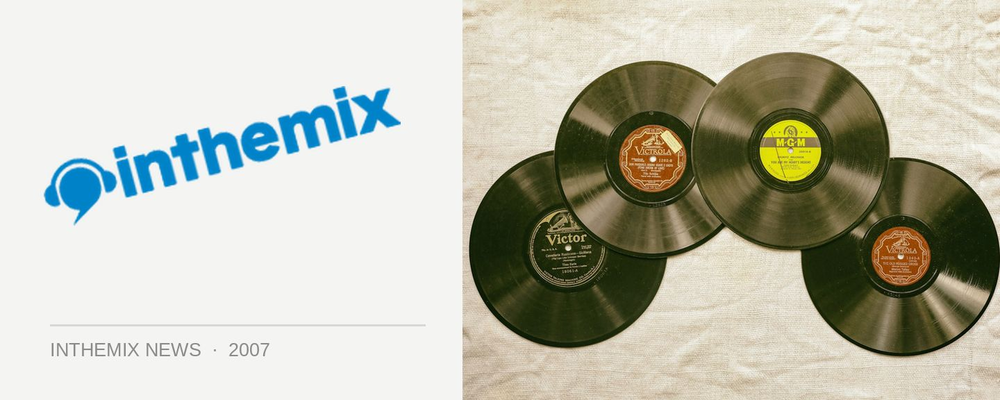

Never Ever Land gets even grander!
Here at inthemix, we’ve dubbed the week just gone by as the ‘official week of the French robot’. Enthusiasm for the upcoming Daft Punk tour reached fever pitch, and presale tickets were snapped up quicker than anyone could have possibly imagined. Anticipation is surely going to build as the end of the year draws closer, and now comes the news that local indie/electro heroes Cut Copy have been added to the lineup of the ‘Never Ever Land’ tour! Labelmates Van She will also be joining the bill in Sydney and Perth.
Brought to you by Michael Coppel and Modular, and supported by inthemix, the ‘Never Ever Land’ tour will see four massive shows across the country this December, with a world-class roster of supports to back up the robot rockers. In addition to the almighty presence of Daft Punk and the above-mentioned additions, we’ll also be enjoying performances from The Presets, Muscles, Bang Gang DJs along with international guests SebastiAn & Kavinsky and more to be announced shortly. We’ve literally been waiting for years fir Daft Punk to reach Australia, but now it’s actually happening!
If you missed out on presale tickets last week, Perth tickets are on sale on inthemix HERE while the remaining tickets go on sale this Thursday September 13th through Ticketmaster. Stay tuned to ITM for all the latest Daft Punk updates!